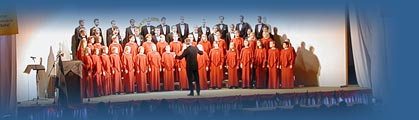

Proyectos
Además del Certamen Internacional de Coros, la Fundación sostiene líneas de trabajo permanentes que nacen de su habilitación legal para llevar adelante actividades artísticas y culturales.
Líneas permanentes
Biblioteca coralPartituras, revistas, libros y grabaciones —corales en particular— a disposición de la comunidad, junto a catálogos de las principales editoriales de música coral de Argentina y el mundo. Se nutre del material que llega con cada certamen.
Conciertos y girasOrganización de conciertos y giras de elencos musicales.
FormaciónDesarrollo de cursos de perfeccionamiento para coreutas y directores.
JuradosActuación como Jurado en encuentros y concursos corales.
PublicacionesEdición de publicaciones diversas vinculadas a la actividad coral.
Proyectos realizados
- “Chubut Canta a la Naturaleza” — Festival Internacional de Coros de Niños y Jóvenes (1998).
- Primavera Coral del Chubut (2000 y 2002).
- Conciertos de Invierno y Conciertos de Primavera (ciclos 2000–2003).
- Festival “Trelew Coral 2001”.
- Ciclo Cultural “AUTOSUR 2003” — coproducción.
- Día Internacional del Canto Coral — celebración anual con recitales que unen a los elencos de la región.
